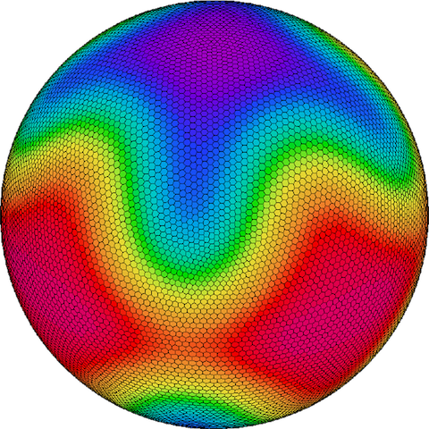

IcoAtmosBenchmark v1: kernels from icosahedral atmospheric models
For the performance evaluation of stencil calculation
Global atmospheric model with the icosahedral grid system in one of the new generation global climate/weather model. The grid-point calculations, which can be less computational costs than the spherical harmonics transformation, are used in the model. On the other hand, patterns of the data access in differential operators are more complicated than the traditional limited-area atmospheric model with the Cartesian grid system. There are different implementations of the dynamical core on the icosahedral grid: direct/indirect memory access, staggered/co-located data distribution, and so on. The objective of this kernel suite is to provide the variety of computational pattern of the icosahedral atmospheric models. The kernels are useful for evaluating the performance of new machines and new programming models.
For the development of domain specific languages (DSLs)
The IcoAtmosBenchmark v1 provides various samples of the source code for the DSLs. The icosahedral grid system is unstructured grid coordinate, and there are a lot of challenging issues about data decomposition, data layout, loop structure, cache blocking, threading, offloading the accelerators, and so on. By applying DSLs or frameworks to the kernels, the developers can try detailed, practical evaluation of their software.
Participating models
ICON(German) : DWD and MPI-M
 DYNAMICO(France) : IPSL and LMD
NICAM(JAPAN) : JAMSTEC, U-Tokyo and RIKEN